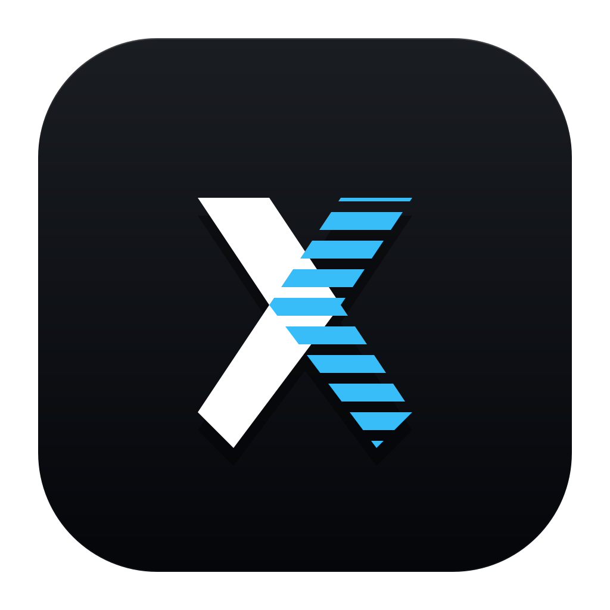
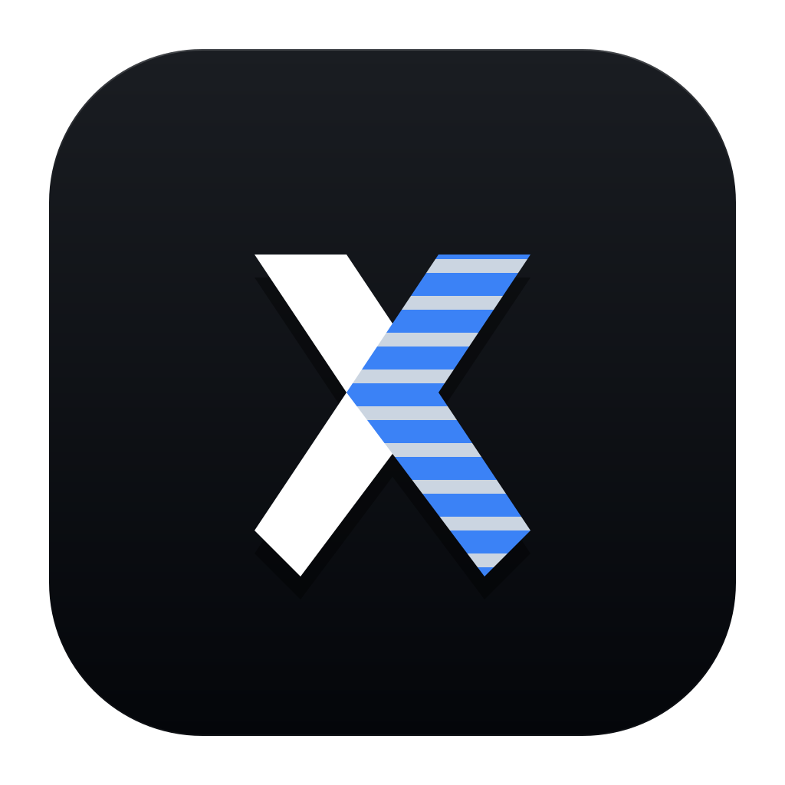
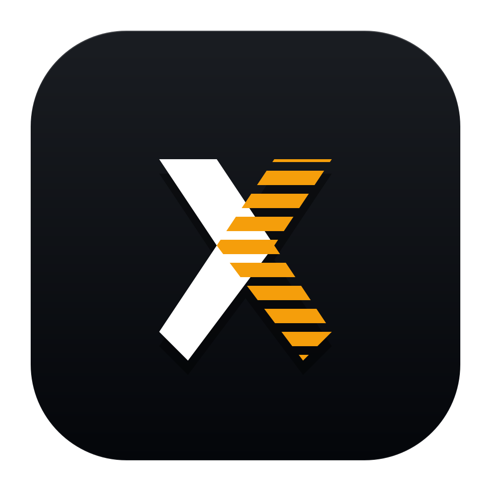
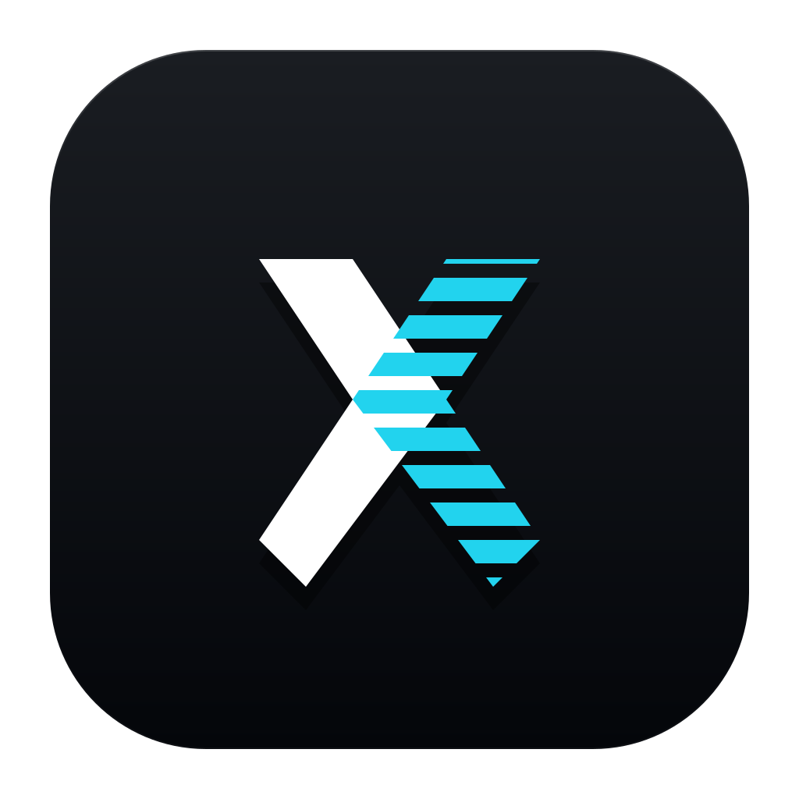
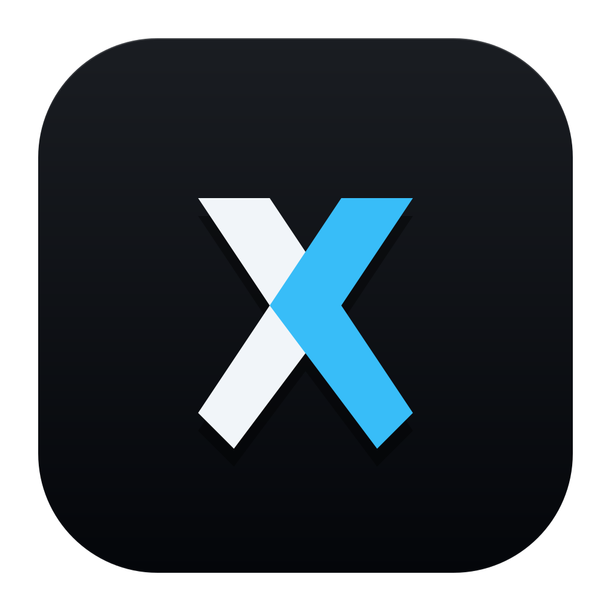
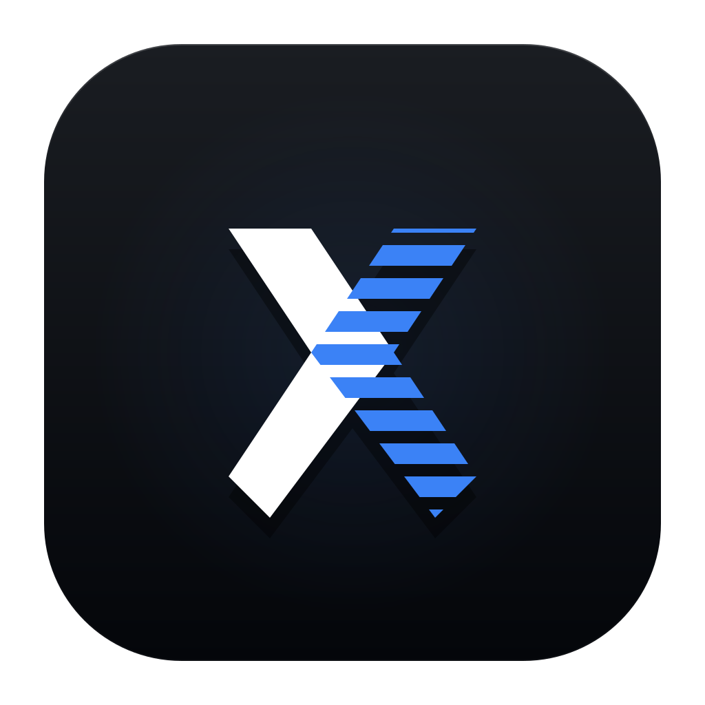
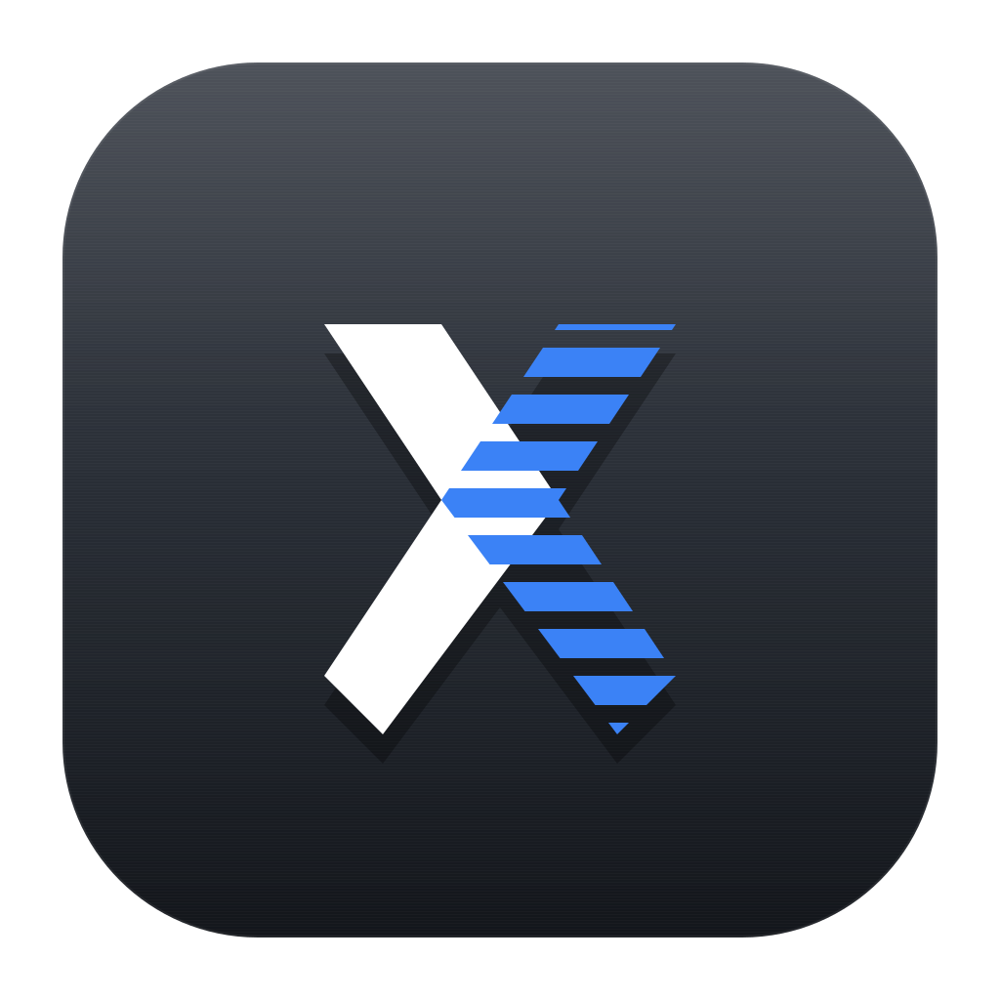
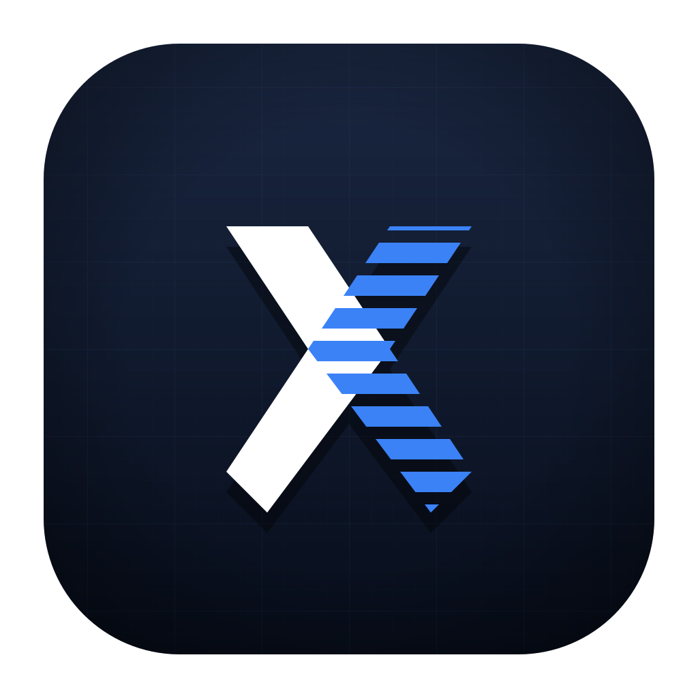
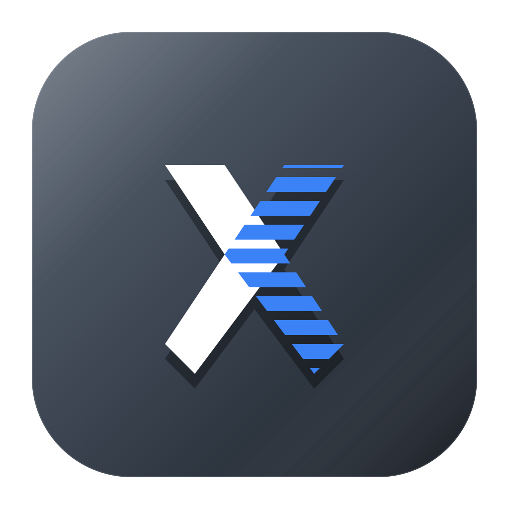
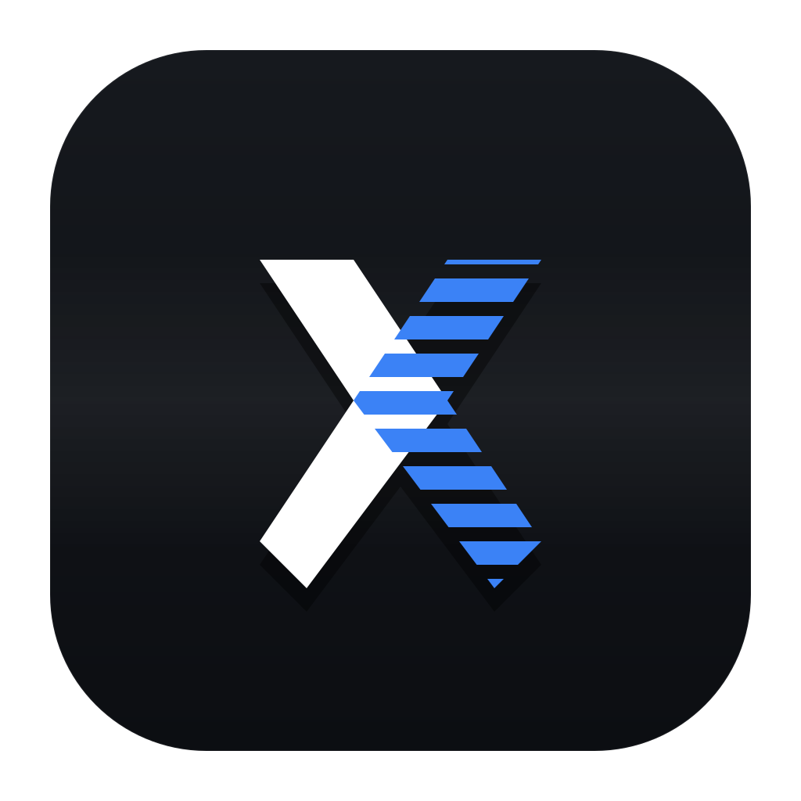

统一使用 Obsidian 黑曜底色，仅调整右刀片的颜色或结构。当前蓝色 #3b82f6 在深底上对比度仅 ~5:1，缩到 32 px 时条纹结构开始消失。下面 6 款分别从 提亮品牌色 / 补足结构 / 更换品牌色 / 放弃条纹 4 个方向尝试。
#3b82f6（Tailwind blue-500）。蓝绿冷调，深底对比 ~5:1。variants/variant-origin.svg
#38bdf8，色相不变但纯度更高、亮度提升 ~25%。深底对比 ~7.5:1，缩小后条纹仍可辨识。
variants/variant-sky.svg
#cbd5e1 浅灰分隔线 — 即使蓝色淡化，条纹结构在 32 px 仍清晰，整体读作"蓝灰相间块"。
variants/variant-divider.svg
#f59e0b 工业暖金色（CAT 卡特彼勒 / DeWalt / 法拉利车间风）。与冷调深底形成补色对比，深底对比 ~10:1，所有尺寸都最跳。色调最具"工业级"语感，但需要接受品牌色从蓝改成金。
variants/variant-amber.svg
#22d3ee。介于 Sky 和荧光之间，更接近"医疗 X 光 / 示波器"的青色。对比 ~9:1，但偏极客/赛博，与"稳重克制"略冲突。
variants/variant-cyan.svg
#38bdf8，左刀片用米白 #f1f5f9。任何尺寸都不会丢结构，最"大品牌"。代价是失去原有的"条纹胶片"特征。
variants/variant-solid.svg
这是问题最尖锐的尺寸。缩到这里仍清晰可辨，VSCode marketplace、Dock、taskbar、文件管理器小图标里才不会"虚一块"。
这些只换背景，X 图标用的还是原蓝色 #3b82f6。可以和上面的 X 配色变体自由组合：选定 X 配色后告诉我，再叠加你喜欢的背景。




